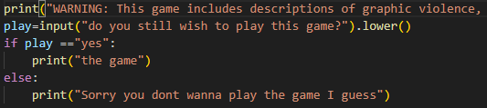
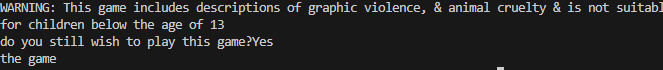
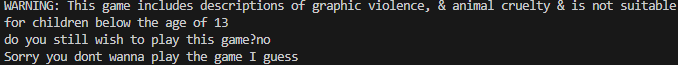
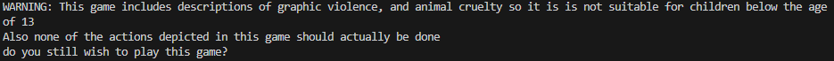
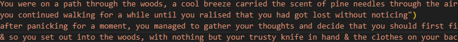
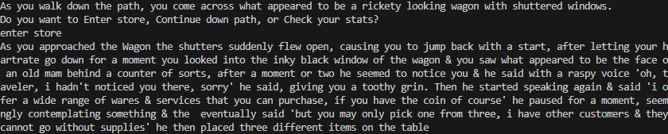

i made a simple warning that said a lot of the major parts of the game were quite violent & asked the user if they still wanted to play the game knowing this
im testing to see if the program will recognise that i said yes & print the phrase "the game"
now im testing if it will print the phrase "sorry you didnt wanna play the game i guess" if i say anything other than yes
"I think the ampersands should be replaced with the word and"
"I think you shpould add that none of the actions in the game shuld be replicated"
I changed the ampersands to the word "and" & i added an extra disclaimer saying that none of the actions should be replicated
the maority of this task is writing in the traditional sense rather than in the coding sense so the testing will just be my opinion
i wrote a simple introduction that i think fits the theme im going for
i think it is pretty good & is written well, i quite like what ive done with this but i think it has a few spelling mistakes
"have then character be looking for a way out of the woods rather than looking for a place to stay"
"i noticed a few spelling & grammar mistakes, you should fix them"
I fixed the spelling mistakes & changed it from needing shelter to needing to escape the woods
I wrote a description for the shop & the man running it, I wanted him to be kind of mysterious & i think i captured that in my description of him
i need to add line breaks in certain areas & fix any spelling mistakes
"theres a few capitalisation & grammar errors, also add a few full stops where required
"add line breaks"